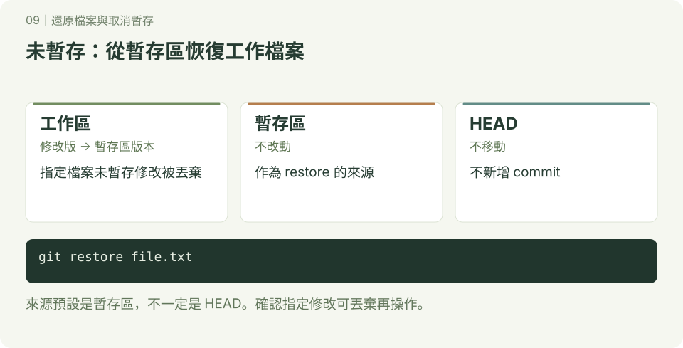
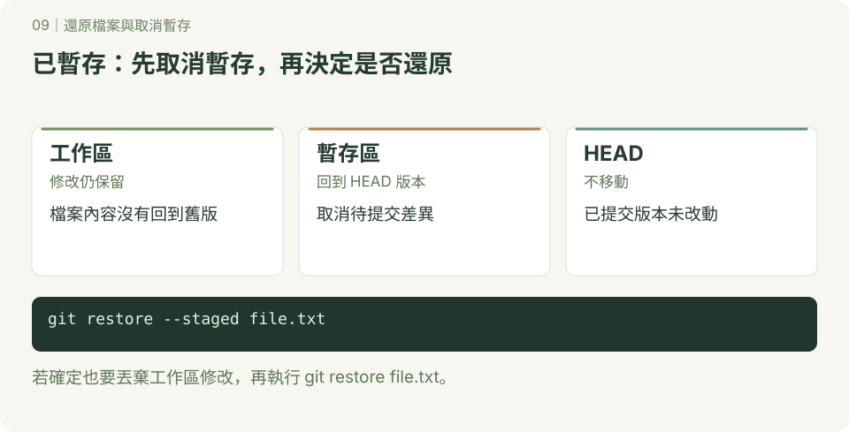

還原檔案與取消暫存
圖解已重畫為 SVG；圖中使用 main 與簡化 commit 名稱，舊範例若使用 master，主要分支的概念相同。互動版見 Git 圖解教室。
在有些情景，我們可能會刪除一些檔案或編輯一些內容,如何回復到目前HEAD的原始狀態.

- 從工作區回復
- 從暫存區回復
從工作區回復
- 使用git restore
新增c1.html,c2.html,c3.html,c3.html加入內容
操作與輸出
$ touch c1.html
$ touch c2.html
$ touch c3.html
$ vim c3.html
____________________________
我是原始狀態
~
~
~
~
~
~
~
~
~
~
~
~
~
~
~
~
~
~
~
~
~
# 建立新的commit
$ git add —all
$ git commit -m “新增c1.html,c2.html,c3.html,c3.html加入內容”
$ git log —oneline #用簡短方式顯示log
______________________________
bfe5b85 (HEAD -> master) 新增c1.html,c2.html,c3.html,c3.html加入內容
63d60eb 建立b3.html
58718cc 建立b2.html
6421101 建立b1.html
454c953 建立3個a檔案
$ ls -al #檢示目前的檔案
____________________________________
total 13
drwxr-xr-x 1 User 197121 0 Dec 2 10:25 ./
drwxr-xr-x 1 User 197121 0 Dec 1 11:46 ../
drwxr-xr-x 1 User 197121 0 Dec 2 10:27 .git/
-rw-r--r-- 1 User 197121 0 Dec 1 12:11 a1.html
-rw-r--r-- 1 User 197121 0 Dec 1 12:11 a2.html
-rw-r--r-- 1 User 197121 0 Dec 1 12:11 a3.html
-rw-r--r-- 1 User 197121 0 Dec 1 13:48 b1.html
-rw-r--r-- 1 User 197121 0 Dec 1 13:48 b2.html
-rw-r--r-- 1 User 197121 0 Dec 1 13:49 b3.html
-rw-r--r-- 1 User 197121 0 Dec 2 10:11 c1.html
-rw-r--r-- 1 User 197121 0 Dec 2 10:11 c2.html
-rw-r--r-- 1 User 197121 19 Dec 2 10:12 c3.html- 以上表示我們最新狀態HEAD是在bfe5b85
- 以上新增c1.html,c2.html,c3.html
刪除c1.html,c2.html和修改c3.html
操作與輸出
$ rm c1.html
$ rm c2.html
$ vim c3.html
________________________________________
我是原始狀態
這是新編輯的內容
~
~
~
~
~
~
~
~
~
________________________________________
$ git status
___________________________________________
On branch master
Changes not staged for commit:
(use "git add/rm <file>..." to update what will be committed)
(use "git restore <file>..." to discard changes in working directory)
deleted: c1.html
deleted: c2.html
modified: c3.html
no changes added to commit (use "git add" and/or "git commit -a")
____________________________________________________
以上代表：
- deleted: c1.html
- deleted: c2.html
- modified: c3.html
回復至原來工作區的狀態
使用git restore file file 檔案回復
使用git restore . 全部回復
操作與輸出
$ git restore c1.html c2.html
$ git restore .
$ git status
________________________
On branch master
nothing to commit, working tree clean
_____________________________________
$ vim c3.html
________________________________
我是原始狀態
~
~
~
________________________________
$ ls -al
________________________________
total 13
drwxr-xr-x 1 User 197121 0 Dec 2 11:04 ./
drwxr-xr-x 1 User 197121 0 Dec 1 11:46 ../
drwxr-xr-x 1 User 197121 0 Dec 2 11:00 .git/
-rw-r--r-- 1 User 197121 0 Dec 1 12:11 a1.html
-rw-r--r-- 1 User 197121 0 Dec 1 12:11 a2.html
-rw-r--r-- 1 User 197121 0 Dec 1 12:11 a3.html
-rw-r--r-- 1 User 197121 0 Dec 1 13:48 b1.html
-rw-r--r-- 1 User 197121 0 Dec 1 13:48 b2.html
-rw-r--r-- 1 User 197121 0 Dec 1 13:49 b3.html
-rw-r--r-- 1 User 197121 0 Dec 2 11:00 c1.html
-rw-r--r-- 1 User 197121 0 Dec 2 11:00 c2.html
-rw-r--r-- 1 User 197121 20 Dec 2 11:00 c3.html
________________________________以上表示全部回復
從暫存區回復

新增d1.html,d2.html,d3.html,d3.html加入內容
操作與輸出
$ touch d1.html
$ touch d2.html
$ vim d3.html #d3自己加入內容
$ git add .
$ git commit -m “加入新增d1.html,d2.html,d3.html,d3.html加入內容“
$ ls d*.html -al
___________________
-rw-r--r-- 1 User 197121 0 Dec 4 11:13 d1.html
-rw-r--r-- 1 User 197121 0 Dec 4 11:13 d2.html
-rw-r--r-- 1 User 197121 22 Dec 4 11:14 d3.html
$ git status
On branch master
nothing to commit, working tree clean刪除d1.html,d2.html,編輯d3.html,加入暫存區
操作與輸出
$ rm d1.html
$ rm d2.html
$ vim d3.html # 修改內容
$ git add d1.html d2.html d3.html
$ git status
________________________________
-On branch master
Changes to be committed:
(use "git restore --staged <file>..." to unstage)
deleted: d1.html
deleted: d2.html
modified: d3.html
$ ls d*.html -al
________________________________
-rw-r--r-- 1 User 197121 44 Dec 4 11:32 d3.html
- 以上代表被放入至stage
- 只剩 d3.html
回復至工作區
操作與輸出
$ git restore --staged d1.html d2.html d3.html
____________________________
On branch master
Changes not staged for commit:
(use "git add/rm <file>..." to update what will be committed)
(use "git restore <file>..." to discard changes in working directory)
deleted: d1.html
deleted: d2.html
modified: d3.html
no changes added to commit (use "git add" and/or "git commit -a")
- 代表回復至工作區
回復到HEAD原始狀態
操作與輸出
$ git restore .
$ git status
____________________________
On branch master
nothing to commit, working tree clean
$ ls d*.* -al
______________________________
-rw-r--r-- 1 User 197121 0 Dec 4 11:47 d1.html
-rw-r--r-- 1 User 197121 0 Dec 4 11:47 d2.html
-rw-r--r-- 1 User 197121 23 Dec 4 11:47 d3.html
- 代表回復到HEAD原始狀態
- 檔案回復了
如果在working area內的是untracked file,必需使用git clean
操作與輸出
$ git clean -fd 檔案名稱從記錄區(commit)回復

新增e1.html,e2.html,e3.html,並建立記錄點(commit)
操作與輸出
$ touch e1.html
$ touch e2.html
$ touch e3.html
$ git add .
$ git commit -m “新增e1.html,e2.html,e3.html”
$ git status
_______________________
On branch master
nothing to commit, working tree clean
刪除e1.html,e2.html,e3.html,並建立記錄點(commit)
操作與輸出
$ rm e1.html e2.html e3.html
$ git commit -a -m “刪除e1.html,e2.html,e3.html” #已經追蹤的檔案可以直接使用 -a 加入暫存庫
$ git log --oneline
_____________________________________
d4e1b24 (HEAD -> master) 刪除e1.html,e2.html,e3.html
c1a6019 新增e1.html,e2.html,e3.html
059c439 “加入新增d1.html,d2.html,d3.html,d3.html加入內容“
bfe5b85 新增c1.html,c2.html,c3.html,c3.html加入內容
63d60eb 建立b3.html
58718cc 建立b2.html
6421101 建立b1.html
454c953 建立3個a檔案
- 以上代表HEAD識別碼是d4e1b24
- 前一個識別碼是c1a6019
使用git reset 回到前一個comit（HEAD,master都改為指向c1a6019)
操作與輸出
$ git reset c1a6019 --hard #--hard將在後面章節講解
_____________________________________________
HEAD is now at c1a6019 新增e1.html,e2.html,e3.html
$ git log --oneline
_________________________
c1a6019 (HEAD -> master) 新增e1.html,e2.html,e3.html
059c439 “加入新增d1.html,d2.html,d3.html,d3.html加入內容“
bfe5b85 新增c1.html,c2.html,c3.html,c3.html加入內容
63d60eb 建立b3.html
58718cc 建立b2.html
6421101 建立b1.html
454c953 建立3個a檔案
$ ls e*.html
___________________________
e1.html e2.html e3.html
- 上面代表回到前一個記錄點(commit)
- 刪除的檔案救回來了